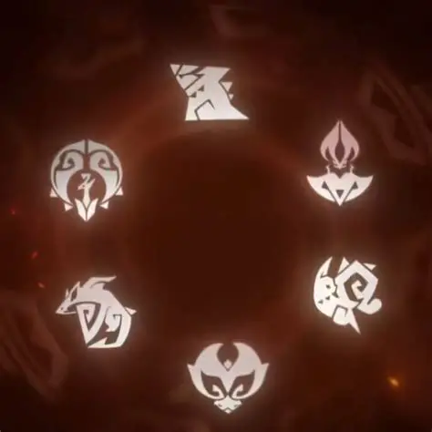
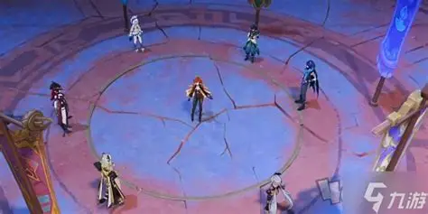
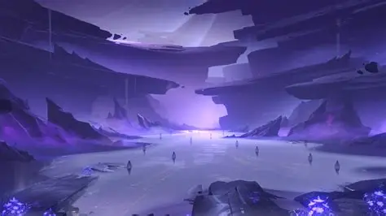
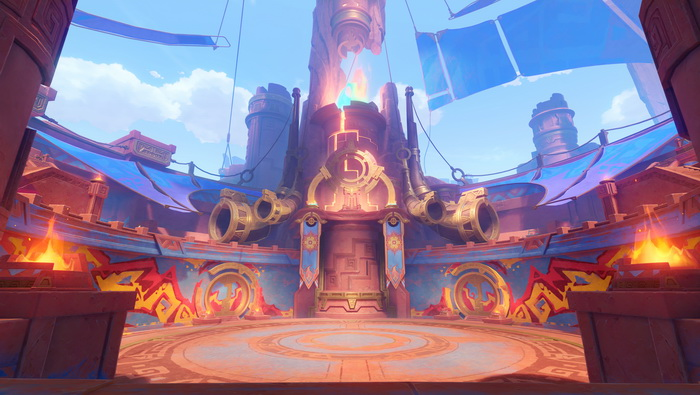
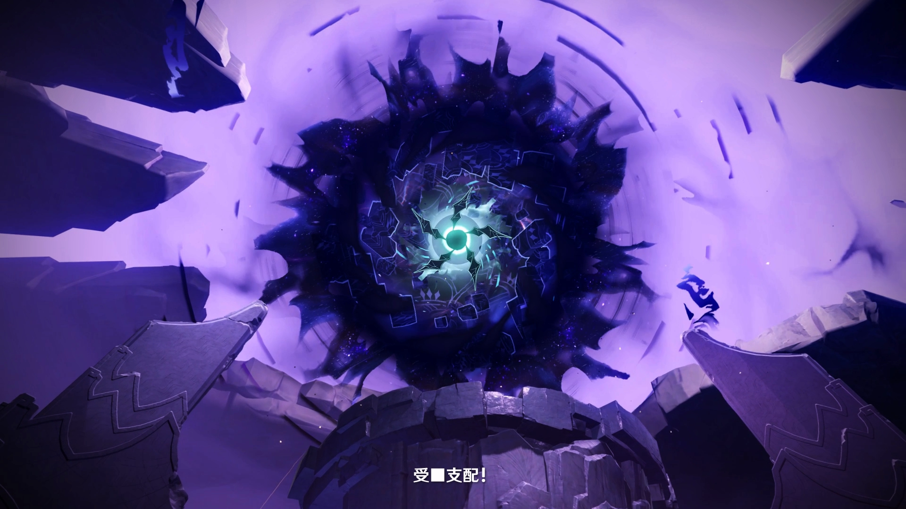
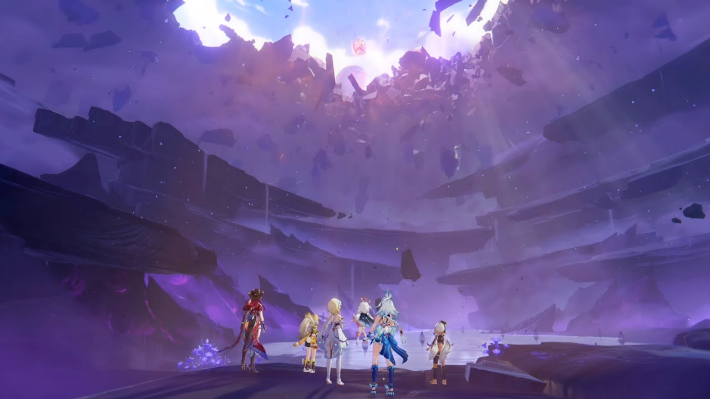
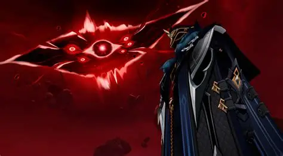
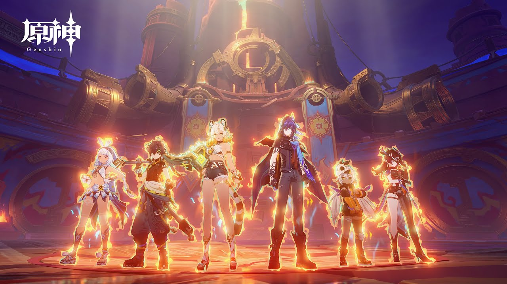
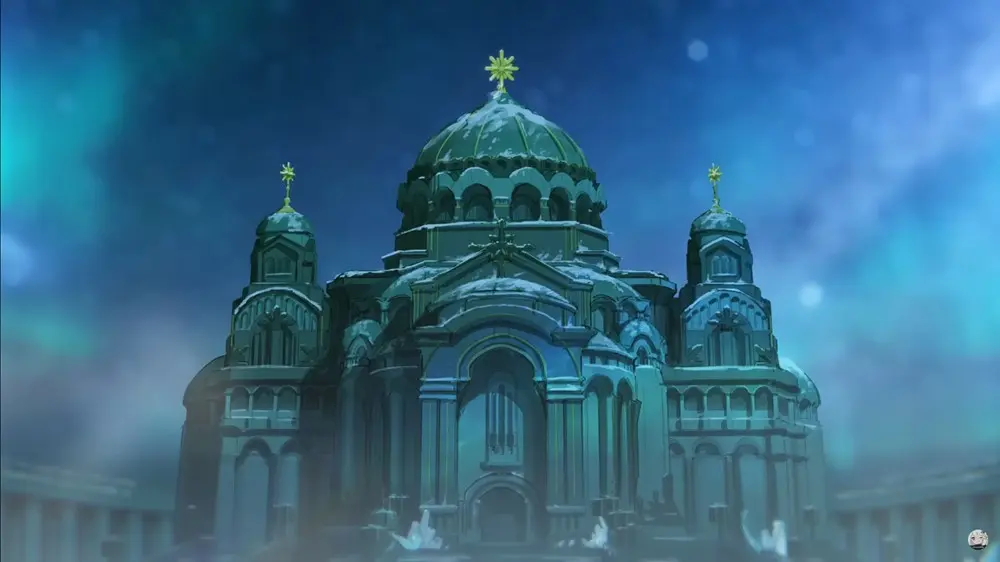

| Historia |
|---|
1. Llegada a Natlan y la tierra de las Seis Tribus El Viajero llega a Natlan, donde seis tribus humanas conviven con los Saurians, criaturas dracónicas ancestrales. La región atraviesa una crisis: las Líneas Ley están inestables y provocan fenómenos anómalos, marcando el inicio de un conflicto que involucra al Reino Nocturno y fuerzas del Abismo. |
2. Conocer a los líderes tribales y a los Seis Héroes El Viajero conoce a los líderes de las seis tribus y a los Héroes seleccionados para representar a cada una de ellas. A través de estas figuras, descubre que las tensiones entre tribus aumentan mientras intentan entender la causa del colapso de las Líneas Ley, cuyo origen apunta a fuerzas del Reino Nocturno. |
3. Las Líneas Ley fracturadas y el Reino Nocturno Los estudios de los Sabios de Natlan revelan que las Líneas Ley están siendo manipuladas por el Abismo. Esta alteración está conectada al Reino Nocturno, un dominio espiritual donde residen almas y antiguos recuerdos, y que ahora amenaza con desbordarse hacia el mundo físico. |
4. Competiciones rituales y el camino hacia la unidad Para evitar que las tribus se dividan ante la crisis, los Héroes convocan una serie de competiciones rituales cuya finalidad es reforzar la cooperación tribal y evitar enfrentamientos internos. El Viajero participa en estas pruebas mientras investiga el origen del desastre que afecta a toda Natlan. |
5. La verdad sobre Mavuika, la Arconte Pyro
Se revela que Mavuika murió hace quinientos años al usar el poder de la muerte para detener una invasión del Abismo. Después renació con un único propósito: llevar a cabo un plan definitivo para salvar a Natlan si el Abismo regresaba. Ahora, al repetirse el ciclo, su vida vuelve a estar en peligro. |
6. El conflicto entre tribus y el avance del Abismo Las tensiones aumentan cuando el Abismo inicia su ataque directo contra Natlan. Algunas tribus dudan en cooperar, otras cuestionan el papel de Mavuika, y los Héroes deben interceder para mantener la paz y evitar que las Líneas Ley colapsen por completo bajo la influencia del enemigo. |
7. La batalla en el Reino Nocturno contra Gosoythoth El Viajero, Mavuika y los Héroes viajan al Reino Nocturno, donde enfrentan a Gosoythoth, un ente abismal capaz de manipular recuerdos y tomar la forma del Dragón Pyro soberano. La batalla requiere estabilizar su propio Nombre Antiguo para resistir la distorsión de las Líneas Ley. |
8. El sacrificio de Capitano En un giro inesperado, Capitano —el Primer Heraldo de los Fatui— interviene. Su sacrificio rompe el destino trágico de Mavuika, cambiando el resultado que la habría llevado a morir nuevamente. Su acto salva a la Arconte Pyro y modifica por completo el desenlace previsto por el Abismo. |
9. El nuevo pacto de Natlan Con las Líneas Ley estabilizadas y el Abismo derrotado, las seis tribus forjan un nuevo pacto de unidad. Mavuika, ahora libre del destino que la condenaba, guía a Natlan hacia una nueva era en la que la cooperación entre humanos y Saurians se convierte en el nuevo fundamento del país. |
10. Conclusión del arco de Natlan Tras la batalla final, el Viajero aprende más sobre los antiguos nombres, la relación entre el Abismo y los Arcontes, y obtiene nueva información que le será clave en su próximo destino: Snezhnaya, la nación de la Reina del Hielo. El viaje continúa. |
.jpg)
.jpg)
.jpg)
.jpg)
.jpg)